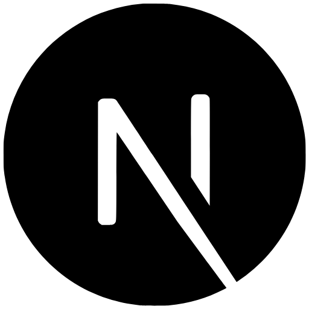
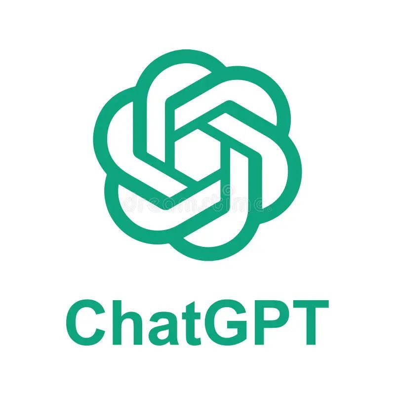
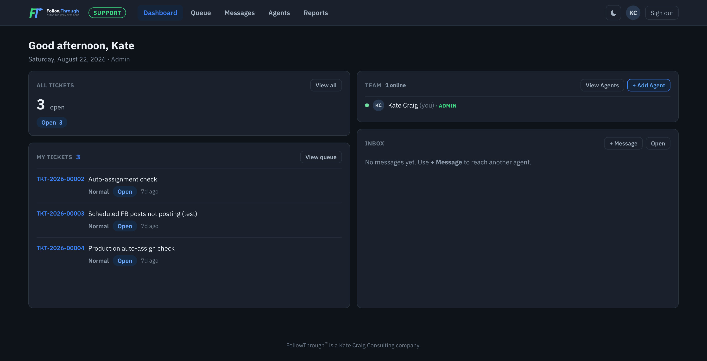
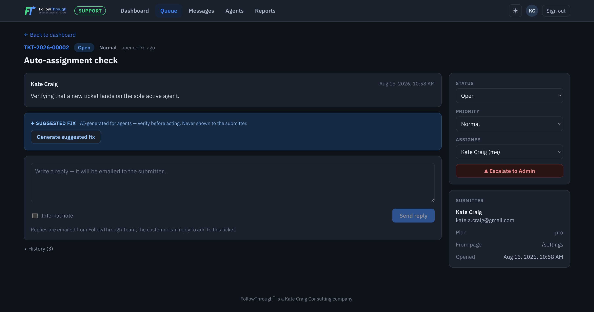

FollowThrough Support Project




I designed and developed a custom WordPress theme for Harvesting Democracy PAC's Website Project. I first designed and developer her site in HTML, CSS, and Javascript, hosting it on Netlify. This included adding a video for the home page background. After the design was complete, I rewrote the code in PHP and created a custom WordPress theme. All pages are mobile responsive and designed for voters, candidates, and donors to easily navigate.

